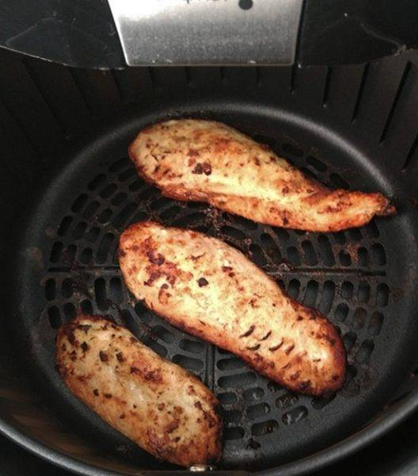

Frango na Air Fryer

Description
Essa receita é extremamente fit e rápida, sendo basicamente proteína pura e de fácil preparo
Ingredients
- Peito de frango
- AirFryer
- Sal
- Queijo
Steps
- Tempere o frango;
- Ligue a airfryer;
- Bote o frango na airfryer;
- Após 15 minutos, bote o queijo em cima do frango;
- Aguarde 1 minuto e pode comer!